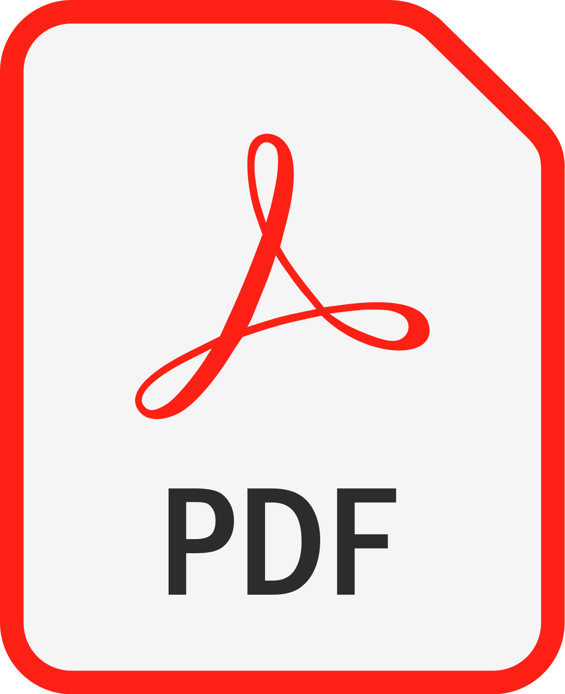

Postgraduate Certificate in Teaching in Higher Education, Surrey Institute of Education, University of Surrey, Mentor: Karen Gravett (January 2025 - 2026)
Ph.D. in Computer Science, Computer Science Research Centre, University of Surrey, Supervisors: Catalin Dragan, and Ioana Boureanu (October 2023 - 2027)
Research Intern, University of Melbourne, Supervisor: Toby Murray, Advisor: Mohammad M. Ahmadpanah (September 2021 - May 2021)
Honours B.Sc. in Computer Science, University of Mohaghegh Ardabili, Supervisor: Reza Hooshmandasl (September 2018 - 2022)
Post-quantum Cryptography, Secure Multi-party Computation, Privacy-preserving Computing, Information-theoretic Security
Reviewer IEEE S&P 2025 (ext.), MDPI Sensors, Arabian Journal of Science and Engineering, Cluster Computing, SN Computer Science, ACM CSAE 2023
Member Institute of Mathematics and its Applications, IEEE: Information Theory Society, ACM: Security, Audit and Control Group, International Association for Cryptologic Research
Mahdavi, M., Abapour, N., & Ahmadian, Z. (2024). Trustworthy Approaches to RSA: Efficient Exploitation Strategies Based on Common Modulus. In 2024 IEEE 23rd International Conference on Trust, Security and Privacy in Computing and Communications (IEEE TrustCom 2024) (pp. 2535-2540). 
Abapour, N., & Ebadpour, M. (2023). PiouCrypt: Decentralized lattice-based method for visual symmetric cryptography. Franklin Open, 3, 100018.
Soleymani, M., Abapour, N., Taghizadeh, E., Siadat, S., & Karkehabadi, R. (2021). Fuzzy rule-based trust management model for the security of cloud computing. Mathematical Problems in Engineering, 2021, Article 6629449.
Lab Instructor of C++ and Object-oriented Design 2023/24, and 2024/25 (EEE2047) by Simon Hadfield
Lab Instructor of Computer Security 2024/25 (COM2041) by Sasa Radomirovic, and Yangguang (Jack) Tian
Mentor and Lab Instructor of Advanced Challenges in Web Technologies 2023/24 (COM3014) by Nishanth Sastry
Lab Instructor of Further Programming Paradigms 2024/25 (COM2040) by Santanu Dash
Lab Instructor of Cloud Computing 2024/25 (COM2040) by Andrew Crossan
Map 26BB03 Research Office, Alen Turing Building, University of Surrey, Stag Hill, Guildford GU2 7XH, United Kingdom
Email: n.abapour@surrey.ac.uk